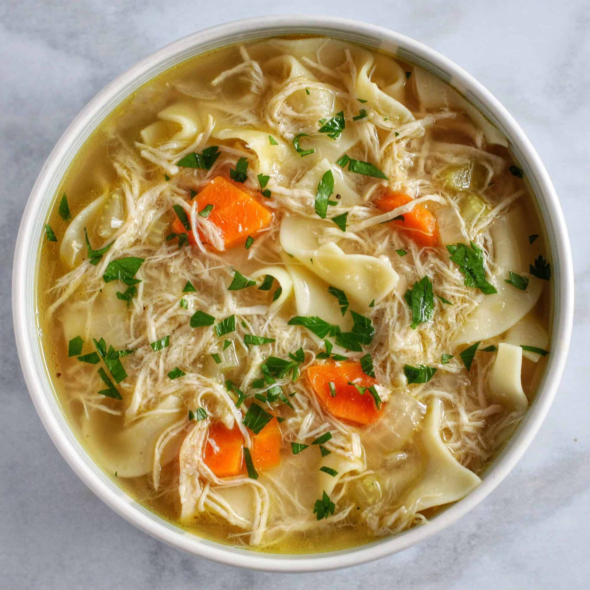

Soup
Home

Classic chicken soup is the ultimate comfort food featuring tender pieces of chicken, hearty vegetables, and aromatic herbs simmered together in a rich, golden broth. This nourishing and soul-warming dish has been cherished for generations as both a satisfying meal and a natural remedy for cold days.
Base:
- 1 whole chicken (3-4 lbs) or 2 lbs chicken thighs and breasts
- 8-10 cups water
- 2 bay leaves
- 1 tsp salt
- 1/2 tsp black pepper
Vegetables:
- 2 medium carrots, sliced
- 2 celery stalks, chopped
- 1 medium onion, diced
- 3 cloves garlic, minced
- 1 cup egg noodles (optional)
Seasonings & Herbs:
- 1 tsp dried thyme
- 1 tsp dried parsley (or 2 tbsp fresh)
- 1 chicken bouillon cube (optional for extra flavor)
- Salt and pepper to taste
- 2 tbsp olive oil or butter
Steps
- Place whole chicken in large pot and cover with water
- Add bay leaves, salt, and pepper, then bring to boil
- Reduce heat and simmer for 1-1.5 hours until chicken is tender
- Remove chicken and let cool, then shred meat and discard bones
- Strain and reserve the broth, removing bay leaves
- Heat oil in the same pot and sauté onions, carrots, and celery for 5 minutes
- Add garlic and cook for another minute until fragrant
- Pour reserved broth back into pot and bring to boil
- Add thyme, parsley, and bouillon cube if using
- Add egg noodles and cook for 8-10 minutes until tender
- Return shredded chicken to pot and simmer for 5 minutes
- Season with salt and pepper to taste
- Serve hot with crackers or crusty bread